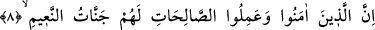
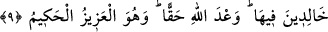
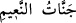

Tanıdık olanlar Kur’ân’ı işittiklerinde kullar/köleler gibi secdeye kapanırlar. Allâh’ın
zikriyle taze ve diri olan kalple feryâd ü figân ederler. Bunlarla ilgili Allah Teâlâ şöyle
buyurur: “Onlara o (Kur’ân) okununca, derhal yüz üstü secdeye kapanırlar.” (el-
İsrâ, 17/107).
İnsanın zihnindeki secde zevki,
Şeytana acı ve sıkıntı verir
“Sen de ona acıklı bir azabın müjdesini ver!” yâni, son derece acı veren bir azâbın
kendisine mutlaka ulaşacağını ona bildir. Burada “müjde” kelimesinin kullanılması,
kâfirlerle alay etmek içindir.
Sonra Allah Teâlâ, mü’minlerin hallerini şu âyetle beyan etmiştir:
8-9. Şüphesiz, îman edip de güzel davranışlarda bulunanlar için, içinde devamlı
kalacakları ve nîmetleri bol cennetler vardır. Bu, Allâh’ın verdiği gerçek sözdür.
O, mutlak güç ve hikmet sâhibidir.
“Şüphesiz” bizim âyetlerimize “îman edip de” o âyetlerin gereği olarak “güzel
davranışlarda bulunanlar” sâlih ameller işleyenler “için,” îmanlarının ve amellerinin
karşılığında “içinde devamlı kalacakları ve nîmetleri bol cennetler” naz ve nîmetle
dolu cennetler veya cennet nîmetleri “vardır.”
Keşfü’l-esrâr’da der ki: “Îman kalb ile tasdiktir. Tam olarak gerçekleşmesi ise sâlih
amellere bağlıdır. Bu sebeple Allah Teâlâ ikisini birlikte peş peşe zikretmiş ve cennetin
ancak ikisiyle birlikte kazanılacağını haber vermiştir. Nitekim Allah Teâlâ: “Güzel
sözler O’na yükselir. Onları da Allâh’a sâlih ameller ulaştırır.” (Fâtır, 35/10)
buyurmuştur.
Beydâvî (r.h.) der ki: “
” cennet nîmetleri demektir. Âyette ise mübâlağa için
aksi (nîmet cennetleri) denilmiştir.
Denilir ki: “Naîm cennetleri, sekiz cennetten biridir. Diğerlerinin isimleri şöyledir:
Dâru’l-Celâl, Dâru’s-Selâm, Dâru’l-Karâr, Adn Cenneti, Me’vâ Cenneti, Huld Cenneti,
Firdevs Cenneti.” Vehb b. Münebbih, İbn Abbas (r.a.)’tan böyle rivâyet etmiştir.
“Bu, Allâh’ın verdiği” yâni Allâh’ın onlara naîm cennetlerini vaadi, “gerçek sözdür.
O, mutlak güç” sâhibidir/Azîzdir; hiçbir şey O’na gâlip gelemez. Dolayısıyla vaadini
yerine getirmesine veya azabını tahakkuk ettirmesine kimse mâni olamaz. “Ve hikmet
sâhibidir.” Hakîmdir; sadece hikmet ve maslahatın gereğini yapar.